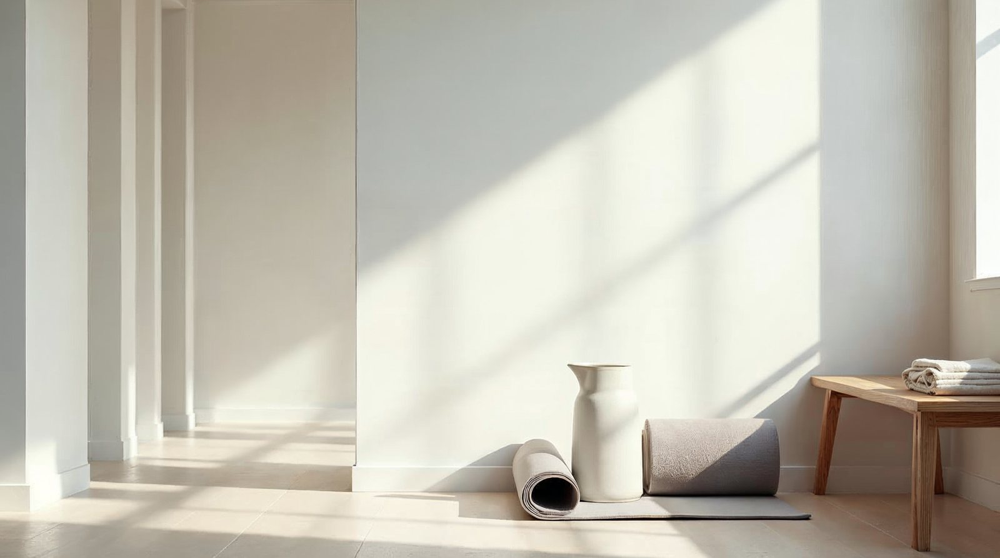
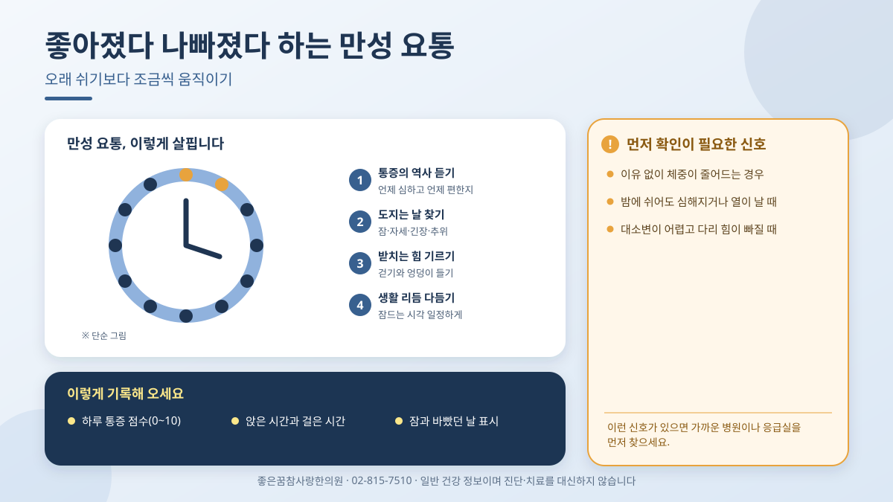

이종호 한의사 감수좋은꿈참사랑한의원 대표원장 (한의사 면허번호 19769)발행 2026-11-26 · 수정 2026-11-26
이 글의 차례
"허리요? 원래 안 좋아요. 몇 년 됐어요." 진료실에서 허리 이야기를 꺼내면 이렇게 대답하시는 분이 참 많습니다. 괜찮다 싶으면 바쁜 일이 몰려오고, 그러면 어김없이 허리가 다시 뻐근해집니다. 파스를 붙이고 며칠 버티다 보면 또 그럭저럭 지나갑니다.
이렇게 허리 통증이 석 달 넘게 이어지거나, 좋아졌다 나빠졌다를 되풀이하는 상태를 만성 요통이라고 부릅니다. 특별한 병이 있어서라기보다, 허리를 둘러싼 근육과 관절, 생활 습관, 잠과 긴장 같은 여러 요소가 얽혀 통증이 오래 머무는 경우가 많습니다.
만성 요통이 힘든 이유는 통증 자체보다 '언제 또 아플지 모른다'는 불안에 있을 때가 많습니다. 허리가 걱정되어 움직임을 줄이고, 움직임이 줄면 허리를 받치는 힘이 약해지고, 약해진 허리는 작은 일에도 다시 아파 옵니다. 그 고리 안에서 몇 년을 보내신 분도 계십니다.
오늘은 허리 통증이 왜 오래가는지, 막 다친 허리와는 어떻게 다르게 살피는지, 진료실에서 무엇을 여쭙고 보는지, 그리고 그 고리를 조금씩 풀어 가는 일상의 방법을 정리해 보겠습니다.
만성 요통은 어떤 상태인가요
허리 통증은 보통 몇 주가 지나면 가라앉는 흐름을 보입니다. 그런데 석 달이 지나도 통증이 이어지거나, 괜찮아졌다가도 몇 주, 몇 달 간격으로 되풀이된다면 만성 요통으로 봅니다.
만성 요통은 하나의 병 이름이라기보다 오래가는 허리 통증을 함께 부르는 말입니다. 영상 검사에서 디스크나 관절의 변화가 보이는 분도 있고, 특별한 이상이 보이지 않는 분도 있습니다. 영상의 변화가 크다고 통증이 더 심한 것도 아니어서, 영상과 통증의 정도가 꼭 맞아떨어지지는 않습니다.
통증의 모양도 다양합니다. 허리 아래가 늘 묵직한 분, 오래 앉거나 서면 뻐근해지는 분, 아침에 굳었다가 움직이면 풀리는 분, 피곤한 날이면 어김없이 쑤시는 분이 계십니다.
왜 허리 통증은 자꾸 되풀이될까요
허리 통증이 오래가고 되풀이되는 데는 몇 가지 이유가 겹쳐 있는 경우가 많습니다. 진료실에서 자주 보는 흐름은 이렇습니다.
- 허리를 받쳐 주는 배와 엉덩이, 등 근육의 힘이 약해진 경우
- 오래 앉거나 한쪽으로 기대는 자세가 하루의 대부분을 차지하는 경우
- 아플까 봐 움직임을 줄이면서 몸이 더 굳어 간 경우
- 잠이 부족하거나 얕아서 몸이 회복할 시간이 모자란 경우
- 일과 생활의 긴장이 쌓여 몸 전체가 늘 움츠러든 경우
- 체중이 늘거나 운동량이 줄어든 시기와 겹친 경우
통증이 오래가면 신경이 통증 신호에 예민해지기도 합니다. 예전에는 아무렇지 않던 작은 움직임에도 허리가 먼저 경고를 보내는 것입니다. 이것은 꾀병이나 기분 탓이 아니라, 오래 아픈 몸에서 실제로 일어나는 변화입니다.
그래서 만성 요통은 허리 한 군데만 보아서는 잘 풀리지 않는 경우가 많습니다. 허리를 둘러싼 근육과 관절, 잠과 피로, 긴장과 마음의 상태까지 함께 살펴야 고리의 어느 지점부터 풀어 갈지 보입니다.
막 다친 허리와는 어떻게 다르게 볼까요
허리를 삐끗해 갑자기 생긴 통증은 다친 조직이 회복될 때까지 무리하지 않고 쉬어 가는 것이 중심입니다. 며칠에서 몇 주 사이에 가라앉는 흐름을 보이는 경우가 많습니다.
반면 만성 요통은 오래 쉬는 것이 오히려 도움이 되지 않는 경우가 많습니다. 허리를 아끼느라 움직이지 않으면 근육이 약해지고 굳어서 작은 일에도 다시 아파 오기 쉽습니다. 그래서 무리하지 않는 범위에서 조금씩 움직임을 늘리는 쪽이 중심이 됩니다.
같은 허리 통증이라도 지금이 막 도진 시기인지, 비교적 잔잔한 시기인지에 따라 관리의 방향도 달라집니다. 도진 시기에는 통증을 가라앉히는 데, 잔잔한 시기에는 허리를 받치는 힘을 기르고 생활을 다듬는 데 초점을 둡니다.
계절과 생활에 따라 도지는 허리
만성 요통이 있는 분들은 허리가 도지는 시기를 꽤 정확히 기억하십니다. 추워지는 늦가을과 겨울, 비가 오기 전 흐린 날, 명절이나 김장처럼 집안일이 몰리는 때, 연말 결산처럼 일이 바쁜 시기가 대표적입니다.
추운 날에는 몸이 움츠러들며 허리와 엉덩이 근육이 굳기 쉽습니다. 아침에 바로 찬 바깥으로 나가기보다 집 안에서 몸을 조금 데우고, 허리를 따뜻하게 감싸 주시면 도움이 됩니다. 얇은 옷을 여러 겹 입어 허리가 드러나지 않게 하는 것도 작은 방법입니다.
집안일이 몰리는 시기에는 한 번에 몰아서 하지 말고 나눠서 하시길 권합니다. 바닥에 쪼그려 앉아 오래 일하기보다 식탁 높이에서 일하고, 30분마다 허리를 펴고 잠깐 걷는 것만으로도 다음 날의 허리가 달라집니다.
바쁜 시기에는 잠이 줄고 운동을 건너뛰기 쉽습니다. 이럴 때일수록 걷기 10분과 잠드는 시각만큼은 지켜 보세요. 허리가 도지는 시기를 미리 알고 대비하면, 도지더라도 그 정도와 기간이 줄어드는 경우가 많습니다.
만성 요통과 헷갈리기 쉬운 통증
오래가는 허리 통증 가운데는 다른 원인을 먼저 확인해야 하는 경우도 있습니다. 아침에 허리가 한참 굳었다가 움직이면 풀리고, 쉬어도 나아지지 않으며 젊은 나이에 시작됐다면 강직성 척추염 같은 염증성 질환을 함께 살핍니다.
다리로 저림이 내려가거나 걸을수록 다리가 무거워진다면 디스크나 척추관 협착증 쪽을 함께 봅니다. 허리보다 옆구리 쪽이 아프고 소변 변화가 있다면 콩팥이나 요로 쪽 확인이 먼저일 수 있습니다. 생리 주기에 맞춰 허리와 아랫배가 함께 아픈 경우도 따로 살핍니다.
연세가 있는 분이 가벼운 충격 뒤에 허리가 갑자기 아파졌다면 뼈가 약해져 생긴 압박골절도 함께 생각합니다. 이렇게 오래가는 허리 통증이라도 그 안에 다른 이야기가 숨어 있을 수 있어, 처음에는 꼼꼼히 나눠 봅니다.
만성 요통을 두고 자주 헷갈리는 것
첫째, 허리가 약하니 최대한 아껴야 한다는 생각입니다. 무거운 것을 무리하게 드는 일은 피해야 하지만, 걷기나 가벼운 운동까지 줄이면 허리를 받치는 힘이 점점 약해집니다. 아끼는 것과 움직이지 않는 것은 다릅니다.
둘째, 한 번에 확 좋아지는 방법이 있을 것이라는 생각입니다. 몇 년에 걸쳐 쌓인 통증은 대개 조금씩 풀립니다. 좋아졌다 나빠졌다를 되풀이하면서도 전체 흐름이 나아지는지를 보시는 것이 마음에도 도움이 됩니다.
셋째, 통증이 있으면 운동을 하면 안 된다는 생각입니다. 만성 요통에서는 약간의 불편함이 있어도 다음 날 통증이 크게 늘지 않는 정도의 움직임은 이어 가는 것이 좋습니다. 그 기준을 진찰 뒤 함께 정하시면 됩니다.
먼저 이렇게 여쭙니다
처음 오시면 저는 대략 이런 순서로 여쭙니다. 정확하지 않아도 괜찮으니 떠오르는 대로 말씀해 주세요.
- 허리가 처음 아팠던 때는 언제이고, 어떤 계기가 있었나요?
- 어떤 시기에 심해지고 어떤 시기에 편해지나요?
- 하루 중 언제 가장 불편한가요? 아침, 오후, 저녁 가운데요?
- 하루에 앉아 있는 시간과 걷는 시간은 어느 정도인가요?
- 잠은 몇 시간 주무시고, 밤에 허리 때문에 깨시나요?
- 지금까지 받아 온 검사와 치료, 드시는 약은 무엇인가요?
체중이 이유 없이 줄거나 밤에 열이 나지 않는지, 대소변에 변화가 없는지도 함께 여쭙니다. 오래가는 허리 통증에서 놓치지 말아야 할 확인이라 모든 분께 여쭙고 있습니다.
일상에서 먼저 해 볼 수 있는 것
만성 요통의 관리는 거창한 운동보다 하루 속 작은 습관에서 시작됩니다. 한꺼번에 여러 가지를 바꾸기보다 하나씩 골라 몸에 익혀 보세요.
- 30~40분 앉았다면 일어나 1~2분 걷기
- 하루 20~30분, 나눠서라도 평지 걷기
- 의자에 엉덩이를 깊숙이 넣고 등받이에 기대 앉기
- 물건을 들 때 무릎을 굽히고 몸 가까이 붙여 들기
- 잠드는 시각과 깨는 시각을 일정하게 맞추기
- 아침에 일어나 누운 채로 무릎을 좌우로 천천히 흔들어 허리 풀기
걷기는 만성 요통에 가장 손쉽고 꾸준히 할 수 있는 움직임입니다. 처음에는 10분이라도 좋습니다. 다음 날 통증이 크게 늘지 않았다면 5분씩 늘려 갑니다. 걷는 동안 팔을 가볍게 흔들고 시선을 앞에 두면 허리가 자연스럽게 펴집니다.
허리를 받치는 근육을 기르는 운동은 누워서 하는 쉬운 동작부터 시작합니다. 바로 누워 무릎을 세우고 엉덩이를 천천히 들었다 내리는 동작, 네발 자세에서 한쪽 팔과 반대쪽 다리를 천천히 뻗는 동작이 많은 분께 편한 출발점입니다. 통증이 날카로워지면 멈춥니다.
처음에는 5회씩 두 번 정도로 시작하고, 익숙해지면 횟수를 조금씩 늘려 가세요. 매일 짧게 하는 것이 가끔 길게 하는 것보다 오래갑니다. 운동한 날은 기록에 표시해 두세요.
잠은 허리 회복에서 생각보다 큰 몫을 합니다. 잠이 부족한 날 같은 자세에서도 통증이 더 크게 느껴지는 경험을 하신 분이 많을 겁니다. 바로 누울 때 무릎 아래에, 옆으로 누울 때 무릎 사이에 베개를 두면 허리가 한결 편해집니다.
긴장을 풀어 주는 시간도 필요합니다. 하루 종일 쫓기듯 지내면 허리와 엉덩이 근육까지 늘 힘이 들어가 있습니다. 잠들기 전 5분 정도 등을 대고 누워 숨을 길게 내쉬며 허리와 엉덩이의 힘을 빼 보세요.
한의원에서 함께 살필 수 있는 경우
- 허리 통증이 몇 달, 몇 년째 좋아졌다 나빠졌다를 되풀이하는 경우
- 검사에서 큰 이상은 없다는데 허리가 늘 묵직한 경우
- 피곤하거나 추운 날, 바쁜 시기마다 허리가 도지는 경우
- 허리 통증과 함께 잠이 얕고 몸이 늘 무거운 경우
- 통증 때문에 움직임이 줄고 체력이 떨어진 경우
좋은꿈참사랑한의원에서는 먼저 아래의 '먼저 확인이 필요한' 신호가 없는지부터 봅니다. 그다음 맥을 짚고, 허리와 골반의 움직임, 근육의 긴장, 서 있는 자세와 걷는 모습을 함께 확인합니다. 잠과 소화, 손발의 온도, 피로도 여쭙습니다.
진찰한 내용에 따라 침 치료, 척추와 골반의 움직임을 보고 세기를 고르는 추나, 필요한 경우 초음파로 위치를 확인하며 놓는 약침 가운데 지금 상태에 맞는 것을 정합니다. 몸이 차고 쉽게 지치는 흐름이 함께 있다면 한약을 상의하기도 하며, 이때는 드시는 약을 확인한 뒤 신중하게 정합니다.
병원에서 처방받은 약은 상의 없이 멈추지 마세요. 한의원 진료는 통증을 가라앉히는 것과 함께, 허리를 받치는 힘과 생활의 리듬을 되찾는 과정을 함께하는 데 의미가 있습니다.

이렇게 기록해 오시면 상담이 쉬워집니다
오래가는 통증은 하루하루의 차이보다 몇 주에 걸친 흐름이 중요합니다. 2~4주 정도 간단히 적어 보세요.
- 하루 중 가장 아팠던 때의 통증 점수(0~10)
- 앉아 있던 시간과 걸은 시간
- 잠든 시각과 깬 시각, 밤에 깬 횟수
- 바쁘거나 긴장했던 날, 추웠던 날 표시
- 통증이 도진 날 하던 일
- 진통제나 파스를 쓴 날
기록을 나란히 놓고 보면 통증이 도지는 날의 공통점이 보이기 시작합니다. 잠이 짧았던 날, 오래 앉았던 날, 마음이 쫓긴 날. 그 공통점이 고리를 풀어 갈 첫 지점이 됩니다.
허리와 다시 친해지는 시간
오래 아픈 허리는 마치 믿을 수 없는 친구처럼 느껴집니다. 언제 또 말썽을 부릴지 몰라 늘 눈치를 보게 됩니다. 하지만 조금씩 움직여 보고, 생각보다 괜찮다는 경험이 쌓이면 허리에 대한 믿음도 다시 자랍니다.
통증이 하루아침에 사라지지 않더라도, 예전보다 덜 자주 도지고 도졌을 때 빨리 가라앉는다면 그것이 바로 나아지는 흐름입니다. 그 작은 변화를 알아차리는 데 기록이 큰 힘이 됩니다.
이번 주에는 하루 10분 걷기 하나만 정해 보세요. 그리고 다음 날 허리가 어땠는지 적어 보세요. 다음에 오시면 그 기록부터 함께 펼쳐 보겠습니다.
이런 증상은 먼저 확인이 필요합니다
- 이유 없이 체중이 줄고 밤에 누워 쉬어도 통증이 심해지거나 열이 함께 나는 경우
- 대소변을 보기 어렵거나 참기 힘들고 다리에 힘이 빠지는 경우
이런 신호가 있으면 한의원보다 가까운 병원이나 응급실을 먼저 찾으세요.
함께 읽으면 좋은 글
- 허리 디스크 초기 신호와 다리 저림은 어떻게 구분하나요?
- 허리를 삐끗해 움직이기 힘든 급성 요추 염좌는 첫 며칠 어떻게 살피나요?
- 디스크가 닳았다는 말을 들었을 때, 퇴행성 디스크는 무엇이고 어떻게 살피나요?
- 허리를 뒤로 젖히거나 돌릴 때 아픈 요추 후관절 증후군은 어떻게 살피나요?
- 오래 앉아 공부하거나 일할 때 허리와 골반은 얼마 간격으로 쉬어 주나요?

여쭙는 것
- 허리가 처음 아팠던 때는 언제이고, 어떤 계기가 있었나요?
- 어떤 시기에 심해지고 어떤 시기에 편해지나요?
- 하루 중 언제 가장 불편한가요? 아침, 오후, 저녁 가운데요?
생활에서 해 볼 것
- 30~40분 앉았다면 일어나 1~2분 걷기
- 하루 20~30분, 나눠서라도 평지 걷기
- 의자에 엉덩이를 깊숙이 넣고 등받이에 기대 앉기
한의원에서 함께 살필 것
- 허리 통증이 몇 달, 몇 년째 좋아졌다 나빠졌다를 되풀이하는 경우
- 검사에서 큰 이상은 없다는데 허리가 늘 묵직한 경우
- 피곤하거나 추운 날, 바쁜 시기마다 허리가 도지는 경우
먼저 확인이 필요한 신호
- 이유 없이 체중이 줄고 밤에 누워 쉬어도 통증이 심해지거나 열이 함께 나는 경우
- 대소변을 보기 어렵거나 참기 힘들고 다리에 힘이 빠지는 경우
한눈에 보는 표
| 구분 | 핵심 |
|---|---|
| 여쭙는 것 | 허리가 처음 아팠던 때는 언제이고, 어떤 계기가 있었나요? 어떤 시기에 심해지고 어떤 시기에 편해지나요? |
| 생활에서 해 볼 것 | 30~40분 앉았다면 일어나 1~2분 걷기 하루 20~30분, 나눠서라도 평지 걷기 |
| 한의원에서 함께 살필 것 | 허리 통증이 몇 달, 몇 년째 좋아졌다 나빠졌다를 되풀이하는 경우 검사에서 큰 이상은 없다는데 허리가 늘 묵직한 경우 |
| 먼저 확인이 필요한 신호 | 이유 없이 체중이 줄고 밤에 누워 쉬어도 통증이 심해지거나 열이 함께 나는 경우 대소변을 보기 어렵거나 참기 힘들고 다리에 힘이 빠지는 경우 |
자주 묻는 질문
만성 요통은 평생 안고 가야 하나요?
통증이 오래되었다고 해서 늘 같은 정도로 이어지는 것은 아닙니다. 허리를 받치는 힘과 생활 습관, 잠을 함께 다듬어 가면 통증이 도지는 간격과 정도가 달라지는 경우가 많습니다.
허리가 아플 때 쉬는 게 좋은가요, 움직이는 게 좋은가요?
막 도진 며칠은 무리하지 않는 것이 좋지만, 만성 요통에서는 오래 쉬기보다 다음 날 통증이 크게 늘지 않는 범위에서 조금씩 움직이는 쪽이 도움이 되는 경우가 많습니다.
검사에서 이상이 없다는데 왜 계속 아픈가요?
근육의 긴장, 자세, 잠과 피로, 통증에 예민해진 신경처럼 영상에 잘 드러나지 않는 요소가 통증을 이어 가는 경우가 많습니다. 그래서 몸 전체의 흐름을 함께 살핍니다.
어떤 운동부터 시작하면 좋을까요?
평지 걷기와 누워서 엉덩이 들기처럼 쉬운 동작부터 시작하시길 권합니다. 통증이 날카로워지는 동작은 멈추시고, 진찰 뒤 지금 상태에 맞는 동작과 양을 함께 정합니다.
한약도 도움이 되나요?
몸이 차거나 쉽게 지치고 잠이 얕은 흐름이 함께 있을 때 진찰 뒤 상의할 수 있습니다. 드시는 약을 모두 확인한 뒤 신중하게 정하며, 병원 약은 상의 없이 멈추지 마세요.
좋은꿈참사랑한의원은 재진 때 지난번 이야기부터 이어서 여쭙니다. 진료시간과 예약은 오시는 길에서 확인하세요.
어디서 상담받을 수 있나요?
좋은꿈참사랑한의원은 서울 동작구 만양로2길 2 신성빌딩 3층·5층(서울 동작구 상도동, 7호선 상도역 3번 출구 근처)에 있습니다. 한의사 3명(이종호 대표원장, 조영기 수석진료원장, 정원영 진료원장)이 진료합니다. 진료시간은 평일 09:30~20:00(점심 13:00~14:00), 토·일·공휴일 09:30~15:00이며, 방문 전 전화로 확인을 권합니다. 예약은 네이버 예약, 카카오톡 상담, 전화 02-815-7510로 받습니다.
이 글은 일반적인 건강 정보이며 개인의 진단이나 치료를 대신하지 않습니다. 증상이 있거나 복용 중인 약이 있다면 진료를 통해 확인하세요. 치료 효과는 개인마다 다를 수 있습니다.
작성 기준: 일반적으로 알려져 있는 건강 정보를 참고해 정리했습니다(대표원장 감수). 증상 기록은 1~2주 동안 하루 1회, 비슷한 시간에 적어 오시면 지난 상태와 비교하기 쉽습니다.